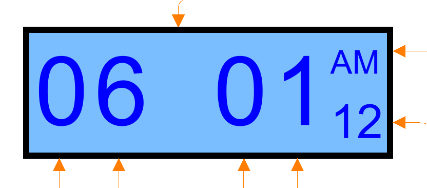

| Name | Description |
|---|---|
 Modelica_StateGraph2.Examples.Applications.HarelsWristWatch.Utilities.SignalBus
Modelica_StateGraph2.Examples.Applications.HarelsWristWatch.Utilities.SignalBus
| Type | Name | Description |
|---|---|---|
| Boolean | a | |
| Boolean | b | |
| Boolean | c | |
| Boolean | d |
expandable connector SignalBus extends Modelica.Icons.SignalBus; Boolean a; Boolean b; Boolean c; Boolean d; end SignalBus;
 Modelica_StateGraph2.Examples.Applications.HarelsWristWatch.Utilities.WatchDisplay
Modelica_StateGraph2.Examples.Applications.HarelsWristWatch.Utilities.WatchDisplay
Displays four large digits, one small digit and one two letter text according to signals provided through the IntegerInputs. The top IntegerInput defines the level of illumination of the display.

Signal inputs are:
| Type | Name | Default | Description |
|---|---|---|---|
| Integer | precision | 0 |
| Type | Name | Description |
|---|---|---|
| input IntegerInput | large_digit1 | |
| input IntegerInput | small_digit | |
| input IntegerInput | text_digit | 1 = Mo, 2 = Tu, 3 = We, 4 = Th, 5 = Fr, 6 = Sa, 7 = Su, 8 = AM, 9 = PM, 10 = Ch, 11 = SW |
| input IntegerInput | illumination | 0 = dark {0,95,191}, 1 = standard {127,191,255}, 2 = bright {159,223,223} |
| input IntegerInput | large_digit2 | |
| input IntegerInput | large_digit3 | |
| input IntegerInput | large_digit4 |
model WatchDisplay parameter Integer precision(min=0) = 0;Modelica.Blocks.Interfaces.IntegerInput large_digit1; Modelica.Blocks.Interfaces.IntegerInput small_digit; Modelica.Blocks.Interfaces.IntegerInput text_digit "1 = Mo, 2 = Tu, 3 = We, 4 = Th, 5 = Fr, 6 = Sa, 7 = Su, 8 = AM, 9 = PM, 10 = Ch, 11 = SW"; Modelica.Blocks.Interfaces.IntegerInput illumination " 0 = dark {0,95,191}, 1 = standard {127,191,255}, 2 = bright {159,223,223}"; Integer dispColour[3] = if mod(illumination,3) == 1 then {127,191,255} else if mod(illumination,3) == 2 then {159,223,223} else {0,95,191};Modelica.Blocks.Interfaces.IntegerInput large_digit2; Modelica.Blocks.Interfaces.IntegerInput large_digit3; Modelica.Blocks.Interfaces.IntegerInput large_digit4; equationend WatchDisplay;
 Modelica_StateGraph2.Examples.Applications.HarelsWristWatch.Utilities.Time
Modelica_StateGraph2.Examples.Applications.HarelsWristWatch.Utilities.Time
Outputs a time integer signal depending on what mode the watch is currently in. As all four time signals, current time, time setting, alarm1 setting and alarm2 setting should be decoded in the exact same fashion, the output of Time is handled the same in DisplayDecoder. This model also contains the actual clock that makes one tick every second. when a user sets a new time, the discrete state in TriggeredAdd will be reset and the output will re-set to that value and continue ticking.
| Type | Name | Description |
|---|---|---|
| SignalBus | signalBus | |
| output IntegerOutput | y |
model TimeSignalBus signalBus; Modelica_StateGraph2.Blocks.MathInteger.TriggeredAdd clock( use_reset=true, use_set=true); Modelica.Blocks.Sources.IntegerConstant time_scale(k=1); Modelica.Blocks.Sources.SampleTrigger time_update_frequency(period=1); Modelica_StateGraph2.Blocks.MathInteger.MultiSwitch time_to_display( nu=4, use_pre_as_default=false, expr={clock_time,update_time,alarm1_time, alarm2_time}); protected Modelica.Blocks.Interfaces.IntegerOutput update_time; Modelica.Blocks.Interfaces.IntegerOutput alarm1_time; Modelica.Blocks.Interfaces.IntegerOutput alarm2_time; Modelica.Blocks.Interfaces.IntegerOutput clock_time; protected SignalBus bus_node; public Modelica.Blocks.Interfaces.IntegerOutput y; Modelica_StateGraph2.Blocks.MathBoolean.And and1( nu=2); Modelica.Blocks.Logical.Pre pre1; Modelica_StateGraph2.Blocks.MathBoolean.Or or1( nu=2); public Modelica.Blocks.Sources.BooleanExpression T_hits_T1(y=abs(mod(clock_time, 3600 *24) - alarm1_time) == 0); public Modelica.Blocks.Sources.BooleanExpression T_hits_T2(y=abs(mod(clock_time, 3600*24) - alarm2_time) == 0); public Modelica.Blocks.Sources.BooleanExpression T_IS_WHOLE_HOUR(y=mod( clock_time, 3600) == 0); equationconnect(clock.u, time_scale.y); connect(time_update_frequency.y, clock.trigger); connect(update_time, signalBus.update_time); connect(clock_time, clock.y); connect(alarm1_time, signalBus.T1); connect(alarm2_time, signalBus.T2); connect(time_to_display.u[1], bus_node.time_active); connect(time_to_display.u[2], bus_node.show_time); connect(time_to_display.u[3], bus_node.in_alarm1); connect(time_to_display.u[4], bus_node.in_alarm2); connect(bus_node, signalBus); connect(time_to_display.y, y); connect(update_time, clock.set); connect(pre1.u, signalBus.update_active); connect(pre1.y, and1.u[1]); connect(and1.u[2], signalBus.time_active); connect(or1.y, clock.reset); connect(and1.y, or1.u[1]); connect(or1.u[2], signalBus.dead_active); connect(clock_time, bus_node.main_time); connect(T_hits_T1.y, bus_node.T_hits_T1); connect(T_hits_T2.y, bus_node.T_hits_T2); connect(T_IS_WHOLE_HOUR.y, bus_node.T_is_whole_hour); end Time;
 Modelica_StateGraph2.Examples.Applications.HarelsWristWatch.Utilities.DisplayDecoder
Modelica_StateGraph2.Examples.Applications.HarelsWristWatch.Utilities.DisplayDecoder
Decodes a number of integer signals (input at the bottom) into six digits to be displayed on a LED display according to definition in the WatchDisplay. Depending on the selected mode, the signals are masked in order to show the chosen entity correctly.
| Type | Name | Description |
|---|---|---|
| input IntegerInput | time_signal | Raw input signal |
| output IntegerOutput | large_digit_1 | |
| output IntegerOutput | large_digit_2 | |
| output IntegerOutput | large_digit_3 | |
| output IntegerOutput | large_digit_4 | |
| output IntegerOutput | small_digit | |
| output IntegerOutput | text_digit | |
| input BooleanInput | time_mode | Raw input signal |
| input BooleanInput | date_mode | Raw input signal |
| input BooleanInput | year_mode | Raw input signal |
| input BooleanInput | stopwatch_mode | Raw input signal |
| input IntegerInput | day_signal | Raw input signal |
| input IntegerInput | date_signal | Raw input signal |
| input IntegerInput | year_signal | Raw input signal |
| input IntegerInput | stopwatch_signal | Raw input signal |
| input IntegerInput | mode_signal | Raw input signal |
block DisplayDecoderModelica.Blocks.Interfaces.IntegerInput time_signal "Raw input signal"; Modelica.Blocks.Interfaces.IntegerOutput large_digit_1; Modelica.Blocks.Interfaces.IntegerOutput large_digit_2; Modelica.Blocks.Interfaces.IntegerOutput large_digit_3; Modelica.Blocks.Interfaces.IntegerOutput large_digit_4; Modelica.Blocks.Interfaces.IntegerOutput small_digit; Modelica.Blocks.Interfaces.IntegerOutput text_digit; Modelica_StateGraph2.Blocks.MathInteger.MultiSwitch digit1_decoder( use_pre_as_default=false, nu=5, expr={div(mod(div(time_signal, 3600), 12), 10),div(mod(div(time_signal, 3600), 24), 10),div(mod(div(date_signal, 100), 12), 10),div(mod( year_signal, 10000), 1000),div(mod(div(div(stopwatch_signal, 100), 60), 60), 10)}); Modelica_StateGraph2.Blocks.MathInteger.MultiSwitch digit2_decoder( use_pre_as_default=false, nu=5, expr={mod(mod(div(time_signal, 3600), 12), 10),mod(mod(div(time_signal, 3600), 24), 10),mod(mod(div(date_signal, 100), 12), 10),div(mod( year_signal, 1000), 100),mod(mod(div(div(stopwatch_signal, 100), 60), 60), 10)}); Modelica_StateGraph2.Blocks.MathInteger.MultiSwitch digit3_decoder( use_pre_as_default=false, nu=5, expr={div(mod(div(time_signal, 60), 60), 10),div(mod(div(time_signal, 60), 60), 10),div(mod(mod(date_signal, 100), 30), 10),div(mod( year_signal, 100), 10),div(mod(div(stopwatch_signal, 100), 60), 10)}); Modelica_StateGraph2.Blocks.MathInteger.MultiSwitch digit4_decoder( use_pre_as_default=false, nu=5, expr={mod(mod(div(time_signal, 60), 10), 10),mod(mod(div(time_signal, 60), 10), 10),mod(mod(mod(date_signal, 100), 30), 10),mod( year_signal, 10),mod(mod(div(stopwatch_signal, 100), 60), 10)}); Modelica_StateGraph2.Blocks.MathInteger.MultiSwitch text_digit_decoder( use_pre_as_default=false, nu=5, expr={if mod(div(time_signal, 3600), 24) < 12 then 8 else 9,-1, day_signal,-1,11}); Modelica_StateGraph2.Blocks.MathInteger.MultiSwitch small_digit_decoder( use_pre_as_default=false, nu=5, expr={12,24,-1,-1,mod(stopwatch_signal, 100)}); Modelica.Blocks.Interfaces.BooleanInput time_mode "Raw input signal"; Modelica.Blocks.Interfaces.BooleanInput date_mode "Raw input signal"; Modelica.Blocks.Interfaces.BooleanInput year_mode "Raw input signal"; Modelica.Blocks.Interfaces.BooleanInput stopwatch_mode "Raw input signal"; Modelica.Blocks.Logical.And and1; Modelica.Blocks.Logical.And and2; Modelica.Blocks.Logical.Not not1; Modelica.Blocks.Interfaces.IntegerInput day_signal "Raw input signal"; Modelica.Blocks.Interfaces.IntegerInput date_signal "Raw input signal"; Modelica.Blocks.Interfaces.IntegerInput year_signal "Raw input signal"; Modelica.Blocks.Interfaces.IntegerInput stopwatch_signal "Raw input signal"; Modelica.Blocks.Interfaces.IntegerInput mode_signal "Raw input signal"; Modelica.Blocks.Sources.BooleanExpression booleanExpression(y=mod( mode_signal, 2) < 0.5); equationconnect(large_digit_1, digit1_decoder.y); connect(digit2_decoder.y, large_digit_2); connect(digit3_decoder.y, large_digit_3); connect(digit4_decoder.y, large_digit_4); connect(small_digit_decoder.y, small_digit); connect(text_digit_decoder.y, text_digit); connect(and1.u2, time_mode); connect(not1.y, and2.u1); connect(and1.y, digit1_decoder.u[1]); connect(and1.y, digit2_decoder.u[1]); connect(and1.y, digit3_decoder.u[1]); connect(and1.y, digit4_decoder.u[1]); connect(and1.y, small_digit_decoder.u[1]); connect(and1.y, text_digit_decoder.u[1]); connect(and2.y, digit1_decoder.u[2]); connect(and2.y, digit2_decoder.u[2]); connect(and2.y, digit3_decoder.u[2]); connect(and2.y, digit4_decoder.u[2]); connect(and2.y, small_digit_decoder.u[2]); connect(and2.y, text_digit_decoder.u[2]); connect(time_mode, and2.u2); connect(date_mode, digit1_decoder.u[3]); connect(date_mode, digit2_decoder.u[3]); connect(date_mode, digit3_decoder.u[3]); connect(date_mode, digit4_decoder.u[3]); connect(date_mode, small_digit_decoder.u[3]); connect(date_mode, text_digit_decoder.u[3]); connect(year_mode, digit1_decoder.u[4]); connect(year_mode, digit2_decoder.u[4]); connect(year_mode, digit3_decoder.u[4]); connect(year_mode, digit4_decoder.u[4]); connect(year_mode, small_digit_decoder.u[4]); connect(year_mode, text_digit_decoder.u[4]); connect(stopwatch_mode, digit1_decoder.u[5]); connect(stopwatch_mode, digit2_decoder.u[5]); connect(stopwatch_mode, digit3_decoder.u[5]); connect(stopwatch_mode, digit4_decoder.u[5]); connect(stopwatch_mode, small_digit_decoder.u[5]); connect(stopwatch_mode, text_digit_decoder.u[5]); connect(booleanExpression.y, and1.u1); connect(not1.u, booleanExpression.y); end DisplayDecoder;
 Modelica_StateGraph2.Examples.Applications.HarelsWristWatch.Utilities.AlarmTrigger
Modelica_StateGraph2.Examples.Applications.HarelsWristWatch.Utilities.AlarmTrigger
Logic for deciding whether any alarm should sound. The logic is defined in D. Harel's paper (see reference on package level) as:
T1 is the time set when alarm1 will sound.
T2 is the time set when alarm1 will sound.
P1 = alarm1 enabled and (alarm2 disabled or not T1 == T2)
P2 = alarm2 enabled and (alarm1 disabled or not T1 == T2)
P = alarm1 enabled and alarm2 enabled and T1 == T2
Alarm 1 will beep when time becomes equal to T1 and P1 is true.
Alarm 2 will beep when time becomes equal to T2 and P2 is true.
Both alarms will beep when time becomes equal to T1 and P is true.
| Type | Name | Description |
|---|---|---|
| input BooleanInput | alarm1_enabled | |
| input BooleanInput | alarm2_enabled | |
| input IntegerInput | T1 | |
| input IntegerInput | T2 | |
| output BooleanOutput | P1 | |
| output BooleanOutput | P2 | |
| output BooleanOutput | P | |
| output BooleanOutput | alarms_beep | |
| input BooleanInput | T_hits_T1 | |
| input BooleanInput | T_hits_T2 |
block AlarmTriggerModelica.Blocks.Interfaces.BooleanInput alarm1_enabled; Modelica.Blocks.Interfaces.BooleanInput alarm2_enabled; Modelica.Blocks.Interfaces.IntegerInput T1; Modelica.Blocks.Interfaces.IntegerInput T2; Modelica.Blocks.Interfaces.BooleanOutput P1; Modelica.Blocks.Interfaces.BooleanOutput P2; Modelica.Blocks.Interfaces.BooleanOutput P; Modelica.Blocks.Interfaces.BooleanOutput alarms_beep; Modelica_StateGraph2.Blocks.MathBoolean.Or or1( nu=2); Modelica_StateGraph2.Blocks.MathBoolean.And and1( nu=3); Modelica_StateGraph2.Blocks.MathBoolean.And and3( nu=4); Modelica_StateGraph2.Blocks.MathInteger.Sum sum( k={1,-1}, nu=2); Modelica.Blocks.Math.IntegerToBoolean integerToBoolean; Modelica.Blocks.Logical.Not not1; Modelica_StateGraph2.Blocks.MathBoolean.Or or2( nu=1); Modelica_StateGraph2.Blocks.MathBoolean.And and2( nu=3); Modelica.Blocks.Logical.Not not2; Modelica.Blocks.Logical.Not not3; Modelica_StateGraph2.Blocks.MathBoolean.Or or3( nu=3); Modelica.Blocks.Interfaces.BooleanInput T_hits_T1; Modelica.Blocks.Interfaces.BooleanInput T_hits_T2; equationconnect(integerToBoolean.u,sum. y); connect(alarm2_enabled, not1.u); connect(not1.y, or1.u[1]); connect(and1.y, P1); connect(and2.y, P2); connect(alarm2_enabled, and2.u[1]); connect(not2.u, alarm1_enabled); connect(not2.y, or2.u[1]); connect(not3.u, integerToBoolean.y); connect(alarm1_enabled, and1.u[1]); connect(or1.y, and1.u[2]); connect(integerToBoolean.y, or1.u[2]); connect(alarm1_enabled, and3.u[1]); connect(alarm2_enabled, and3.u[2]); connect(not3.y, and3.u[3]); connect(or3.y, alarms_beep); connect(or3.u[1], and1.y); connect(or3.u[2], and2.y); connect(or3.u[3], and3.y); connect(P, and3.y); connect(T1, sum.u[1]); connect(T2, sum.u[2]); connect(T_hits_T1, and1.u[3]); connect(or2.y, and2.u[2]); connect(T_hits_T2, and2.u[3]); connect(T_hits_T1, and3.u[4]); end AlarmTrigger;
 Modelica_StateGraph2.Examples.Applications.HarelsWristWatch.Utilities.WatchController
Modelica_StateGraph2.Examples.Applications.HarelsWristWatch.Utilities.WatchController
The watch controller contains the clock functionality, gathering of stopwatch signals, time settings and modes from different parts of the wristwatch that are gathered, grouped together and finally decoded into outputs to the LED display.
| Type | Name | Description |
|---|---|---|
| SignalBus | display_node | |
| output IntegerOutput | large_digit1 | |
| output IntegerOutput | large_digit2 | |
| output IntegerOutput | large_digit3 | |
| output IntegerOutput | large_digit4 | |
| output IntegerOutput | small_digit | |
| output IntegerOutput | text_digit |
model WatchController import Modelica_StateGraph2;Modelica_StateGraph2.Examples.Applications.HarelsWristWatch.Utilities.Time Time; DisplayDecoder displayController; public Modelica_StateGraph2.Blocks.MathBoolean.Or time_mode( nu=5); public Modelica_StateGraph2.Blocks.MathBoolean.Or date_mode( nu=2); public SignalBus display_node; Modelica.Blocks.Interfaces.IntegerOutput large_digit1; Modelica.Blocks.Interfaces.IntegerOutput large_digit2; Modelica.Blocks.Interfaces.IntegerOutput large_digit3; Modelica.Blocks.Interfaces.IntegerOutput large_digit4; Modelica.Blocks.Interfaces.IntegerOutput small_digit; Modelica.Blocks.Interfaces.IntegerOutput text_digit; equationconnect(time_mode.u[1],display_node. time_active); connect(time_mode.u[2],display_node. show_time); connect(time_mode.u[3],display_node. in_alarm1); connect(time_mode.u[4],display_node. in_alarm2); connect(time_mode.u[5],display_node. in_chime); connect(displayController.time_mode,time_mode. y); connect(displayController.year_mode,display_node. show_year); connect(Time.y,displayController. time_signal); connect(date_mode.y,displayController. date_mode); connect(date_mode.u[1],display_node. date_active); connect(date_mode.u[2],display_node. show_date); connect(displayController.stopwatch_mode, display_node.stopwatch_mode); connect(Time.signalBus, display_node); connect(displayController.mode_signal, display_node.mode_setting); connect(displayController.date_signal, display_node.date_setting); connect(displayController.year_signal, display_node.year_setting); connect(displayController.stopwatch_signal, display_node.stopwatch_time); connect(displayController.day_signal, display_node.day_setting); connect(displayController.large_digit_1, large_digit1); connect(displayController.large_digit_2, large_digit2); connect(displayController.large_digit_3, large_digit3); connect(displayController.large_digit_4, large_digit4); connect(displayController.small_digit, small_digit); connect(displayController.text_digit, text_digit); connect(time_mode.u[5], display_node.in_chime); end WatchController;